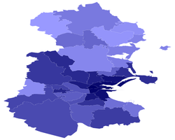
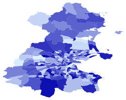

-
Overview
|
Map
|
Statistics
|
Analysis
|
About
|
Log a Price
Analysis
The principal aim of the project is to exaimine whether and if so how geographical and social factors affect the price of a pint of Guinness in county Dublin.
The geographical regions we have considered are 1) Dublin post routing administrative areas and 2) electoral divisions within county Dublin. This analysis is found here
Dublin post routing administrative areas
Dublin electoral divisions
The examination of the effect of social factors on Guinness pricing will be carried out once a more complete price distribution has been collected. This analysis will be here in the future.
A secondary theme of the project relates to the distribution of the pubs themselves. Interesting problems related to this theme are 1) What is the furthest you can be from a pub in County Dublin? The solution of which can be found here and 2) The travelling drunkard problem; what is the route that minimises travel distance and visits every pub within the two circular roads bounding Dublin city centre? The solution of this problem can be found here.
We also aim to look at other interesting mathematical problems concerning Guinness, pubs and Dublin. The next thing we plan to do is to analyse Dublin's electoral divisions as an N-colour map problem. If you have any suggestions as to what might be an interesting problem please get in contact.